一、鱿鱼筒身
- 一手捏住鱿鱼筒，一手抓头部，轻轻往外拉，直接把内脏一起从筒里拽出来；
- 撕掉表皮、紫红色薄膜；
- 掏出内软骨（筒里面有一条透明细长塑料一样的硬片）；
- 清洗筒身内部，冲洗干净残留的黏膜、杂质；
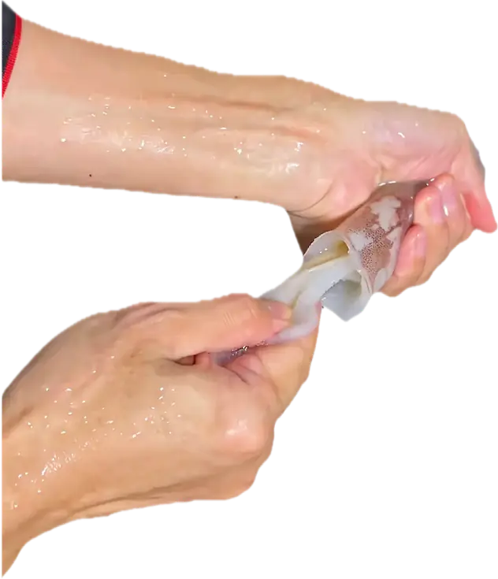
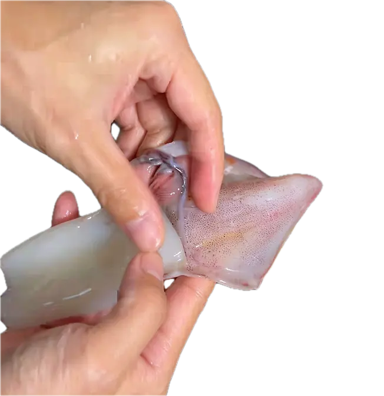
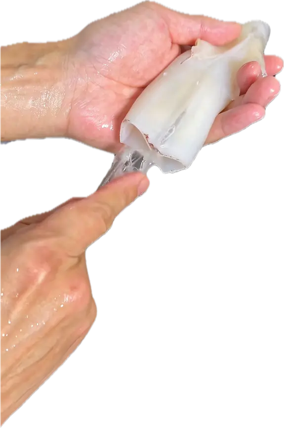
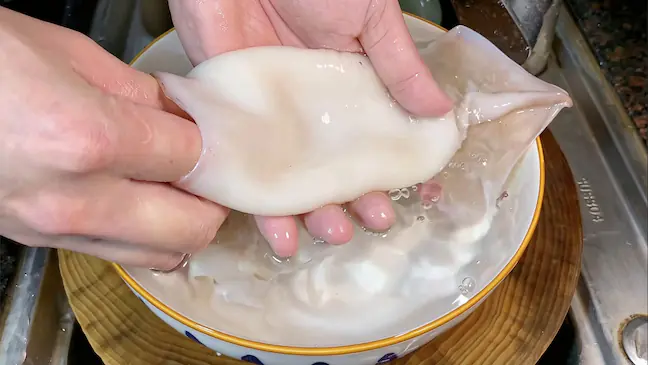
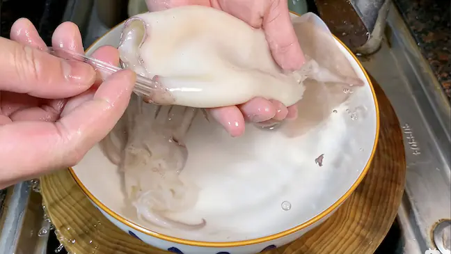
二、改刀、切片
- 撕掉尾部的两块三角块，共两片；
- 从筒身薄的一面，对半切开，翻过来，沿着内侧（不带皮那一面）下刀，斜着切，不要切断；这样才能让鱿鱼煮熟后卷出花；
- 斜着切完一个方向后，对着切两外方向，这里斜刀、直刀切都可以，切出十字花；
- 切大片，煮熟后，鱿鱼会缩小，切小片的话，会缩得更小。
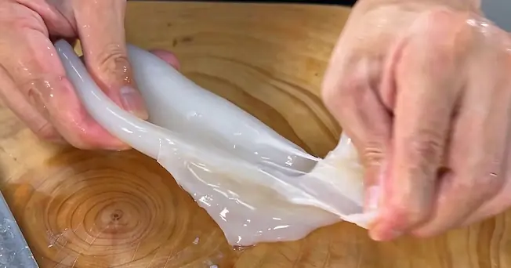
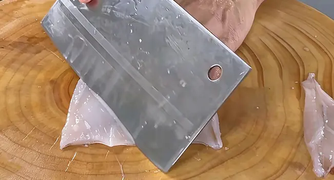
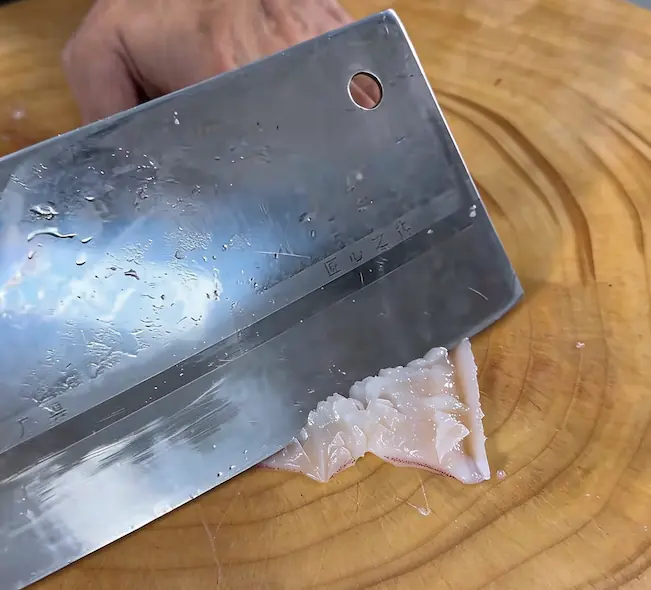
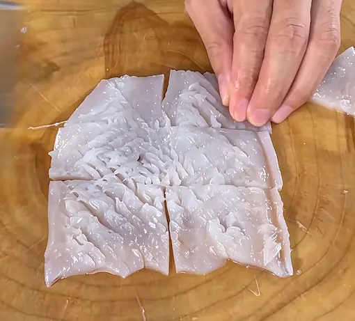
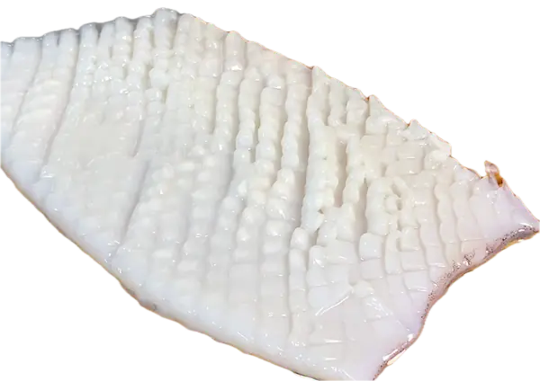
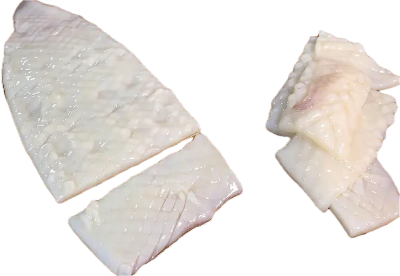
三、处理头部
- 去除鱿鱼眼睛，（小心会喷墨汁，在水池操作，冲洗干净）；
- 将鱿鱼须翻过来，挤掉牙齿，中间黑色，尖尖的一小块；也可以对半切开，取出鱿鱼珠，扣掉牙齿；
- 鱿鱼须皮可以不撕，每一条须吸盘清洗干净，用手捏住吸盘边缘，顺着鱿鱼须向外搓推；
- 改刀，切大条。
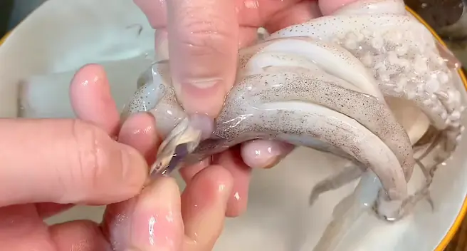
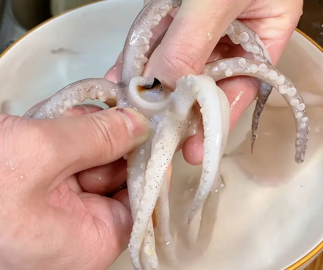
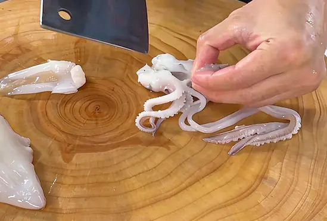
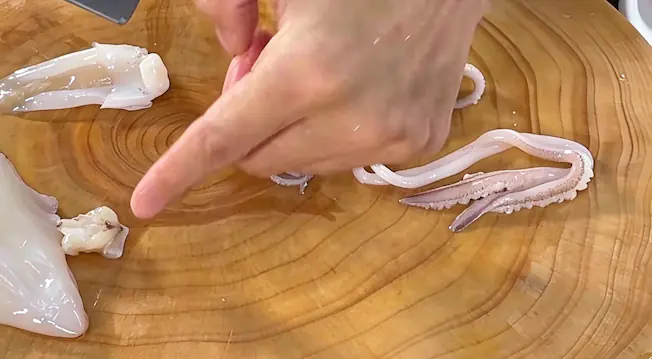
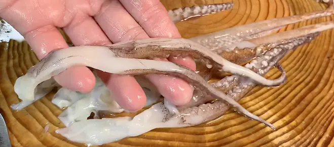